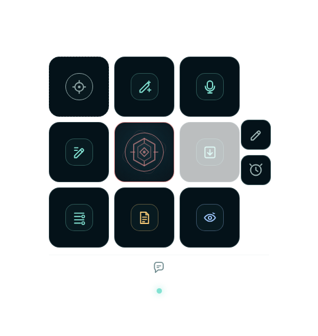
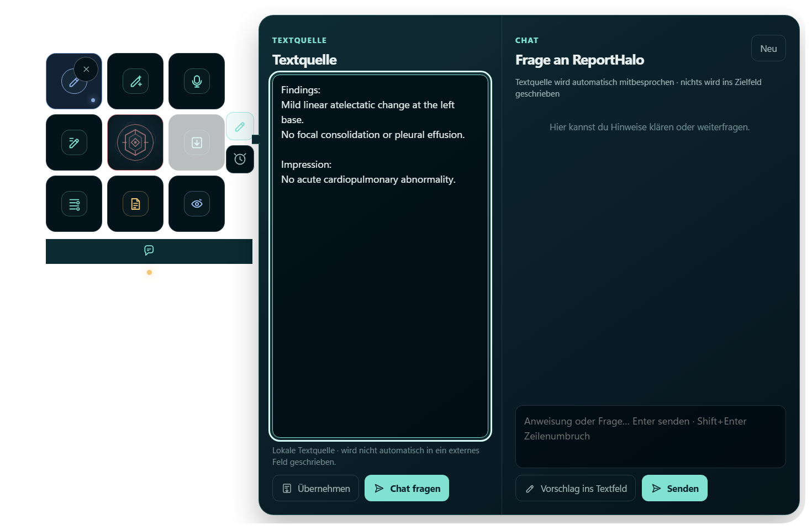

Existing text first
Actions work from the supplied report text and preserve its clinical qualifiers. They do not invent unseen findings or history.
Windows companion for radiology reporting
ReportHalo stays beside the active RIS, Word, or editor field. It works with an explicit clipboard workflow across DMO/RIS installations and can test accessible UIA fields when available, while keeping the source application authoritative.

ReportHalo is not a certified medical device. Results are drafts and must be checked against the original report context before use. The screenshots on this page contain synthetic example text only.
Product
The compact Halo Cub starts with the nine actions used most often. Right-click the core to switch to a larger floating Cub; Text, chat, context, and review open as attached panels without covering the outer controls.
Actions work from the supplied report text and preserve its clinical qualifiers. They do not invent unseen findings or history.
An external field must be selected first. Before write-back, the application checks that the window, control, and source text are still the same.
Field actions return a compact result. Explanations, changes, and possible issues stay in the Chat panel.
3×3 controls
The labels below describe the current German-language workflow. The closed Orb exposes the same functions through icons, tooltips, and accessible names.
Import copied DMO/RIS text or test the focused UIA field; drop text here as a local source. The small X releases the target or clears the source.
Rephrase existing report text for clarity without adding unsupported facts.
Record a short segment, transcribe it, and keep the transcript pending until insertion is requested.
Correct spelling, grammar, punctuation, dictation artifacts, and report style. Medical or logical concerns are not silently changed.
Drag the Orb here. The core shows ready, working, or offline state. Right-click opens settings, account, prompts, and close.
Apply a reviewed result to the active field after the target has been checked again.
Organize supplied text while preserving measurements, negations, uncertainty, and other report facts.
Add a draft assessment below the existing content. This action does not replace the report.
Open the complete editable result first, or switch to a character-level before/after diff. Copy, save, revise, or deliberately transfer the result.
Edge controls: the right edge opens Text & Chat or Context; the lower edge opens Chat. Captured external text becomes discussion context automatically. A Chat proposal starts in the local Text pane and never writes to another application by itself.
Attached workspace
The Text pane holds the local source or a proposed revision. The Chat pane is where questions, explanations, and review notes remain. The screenshot uses synthetic example text and was captured from the running application.

Typical flow
Copy the marked DMO/RIS text and import it explicitly, or test the focused UIA field when the installation exposes it.
Use proofreading, writing, structure, assessment, or dictation on the supplied text.
Inspect the result in the editor or diff view, then explicitly insert it if it is suitable.
Runtime options
Uses the official local Codex runtime and browser account login. An existing installation is reused; a pinned helper can install it if needed. The Codex payload is not embedded in ReportHalo.
npm startUses a smaller build without the Codex adapter. It supports OpenAI and Azure OpenAI, encrypted local credentials, streaming, and local daily/monthly token limits.
npm run start:apiBoundary
Proofreading is limited to language and dictation artifacts. ReportHalo preserves numbers, units, laterality, anatomy, negation, uncertainty, dates, temporal qualifiers, and recommendations. Possible medical or logical issues are shown separately in Chat. A changed or unverified target receives no write.